方法
从会议论文、公开代码仓库和 GitHub issues 构造样本；过滤出与复现相关的问题；让 agent 在论文与仓库快照上做静态审计；再用 exact match、semantic match、paper-level any/all match 和 post-fix FPR 衡量是否找回真实问题。
生成日期：2026-06-17（周三）
信息截止时间：2026-06-17 13:10 CST；联网核验范围覆盖 arXiv、GitHub API、OpenAI 官方 RSS/YouTube、Anthropic 官方 News/YouTube。
ReproRepo proposes a scalable benchmark for evaluating LLM agents as reproducibility auditors. Instead of hand-writing expert tasks, it uses human-raised GitHub issues as natural supervision over real paper-repository pairs. The benchmark covers 1,149 machine-learning papers and 7,553 reported reproducibility blockers, then asks agents such as Claude Code and Codex to inspect a paper plus a fixed repository snapshot without executing code. The strongest configuration, Codex with GPT-5.5, semantically surfaces at least one related human-reported blocker for 89.7% of ICLR 2026 papers, while exact localization remains much harder. The main contribution is not a new agent architecture, but a scalable evaluation design: issue-grounded labels, static audit tasks, post-fix false-positive checks, and paper-level as well as issue-level metrics. Its limits are important: GitHub issues are noisy and incomplete, the study emphasizes static no-execution auditing, and an LLM judge is still part of the matching pipeline despite human validation.
ReproRepo 提出了一套可扩展的 LLM agent 复现审计 benchmark。它不依赖专家手写任务，而是把真实用户在 GitHub issues 中提出的复现问题作为自然监督信号，构造论文-仓库配对任务。数据集覆盖 1,149 篇机器学习论文和 7,553 个被报告的复现阻塞点，让 Claude Code、Codex 等 agent 在不执行代码的情况下审查论文与固定仓库快照。最强配置 Codex + GPT-5.5 能在 ICLR 2026 论文中，对 89.7% 的论文语义命中至少一个真实用户报告过的阻塞点，但精确定位具体根因仍明显更难。它的核心创新不是新的 agent 架构，而是评测设计：用 issue 做标签、设计静态审计任务、通过修复后快照检查误报，并同时报告论文级与 issue 级指标。局限也很清楚：GitHub issues 本身有噪声且不完整，实验重点是无执行的静态审计，匹配过程仍依赖 LLM judge，虽然作者补充了人工验证。
从会议论文、公开代码仓库和 GitHub issues 构造样本；过滤出与复现相关的问题；让 agent 在论文与仓库快照上做静态审计；再用 exact match、semantic match、paper-level any/all match 和 post-fix FPR 衡量是否找回真实问题。
把真实用户遇到的问题变成可持续更新的监督信号，降低 benchmark 维护成本；同时保留真实仓库复杂性，比人工注入错误更贴近研究复现场景。
Codex + GPT-5.5 在 ICLR 2026 上达到 issue-level SM@10 58.1%、paper-level any SM@10 89.7%，平均成本约 1.26 美元；所有模型的误报率最高 3.5%。semantic match 明显高于 exact match，说明 agent 常能找到风险区域，但不一定能精确定位根因。
GitHub issue 标签并不覆盖全部复现风险；静态审计无法替代运行实验；长耗时训练、硬件依赖、外部服务和指标偏差仍需要执行式验证；LLM judge 虽有人类抽样验证，但仍可能带来匹配偏差。
以下按论文顺序列出全部公开可访问的 Figure 1-9 与 Table 1-9。复杂图表与表格以论文 PDF 页面截图嵌入，未发现需要额外列出的缺失图表。来源均为 作者上传 PDF。
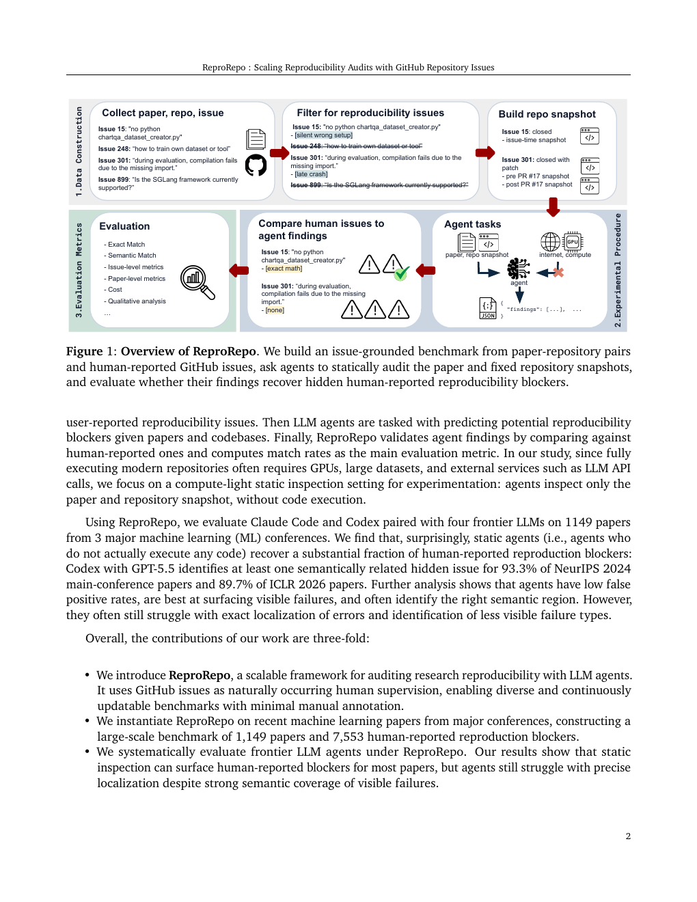
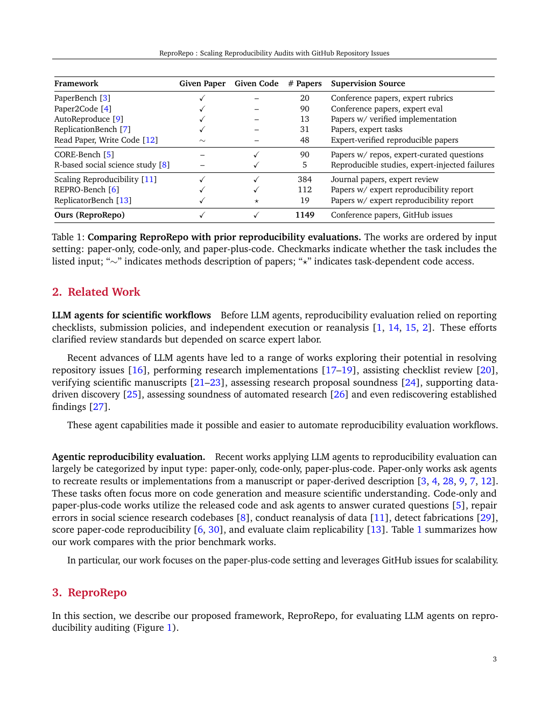
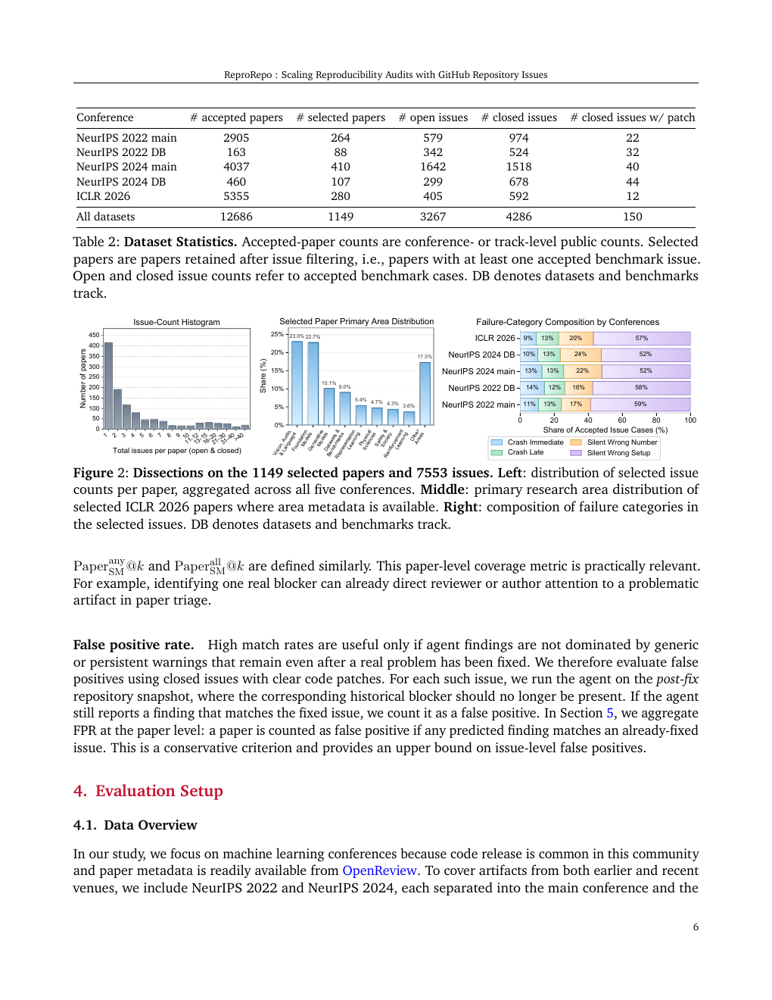
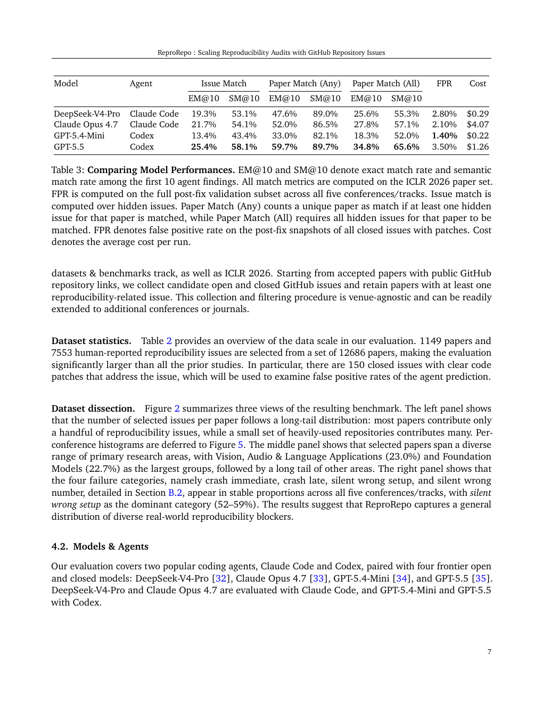
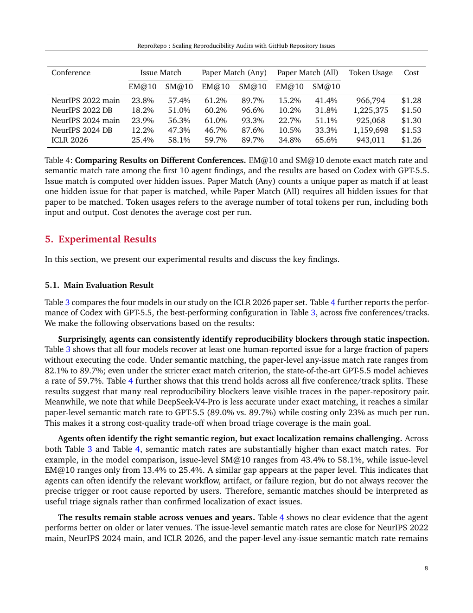
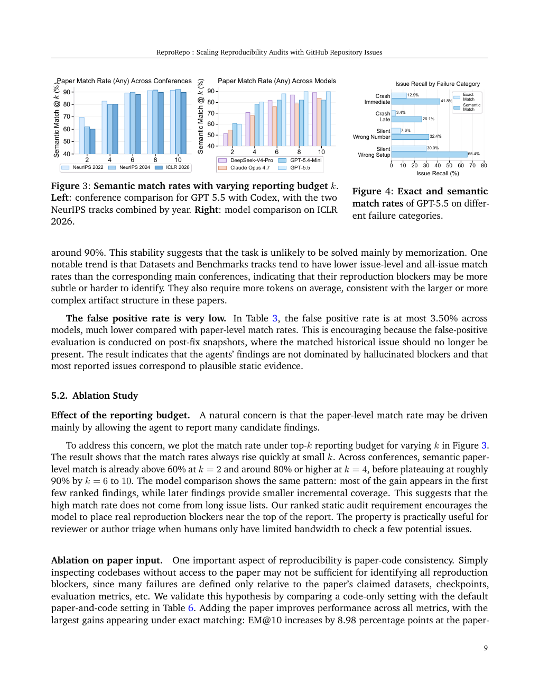
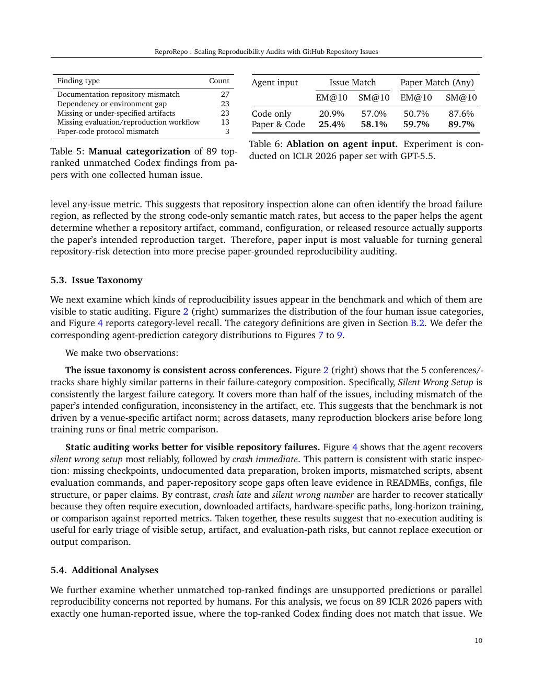
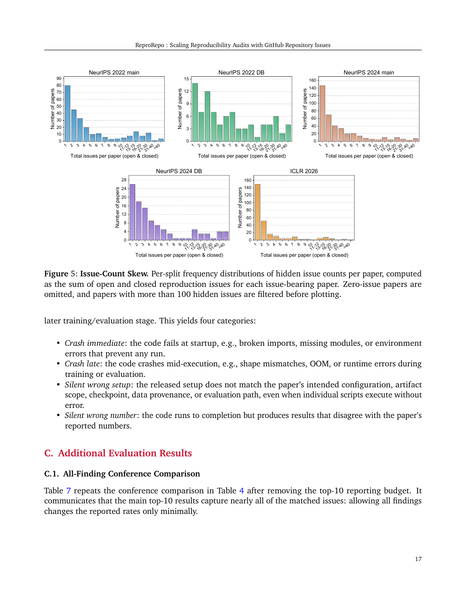
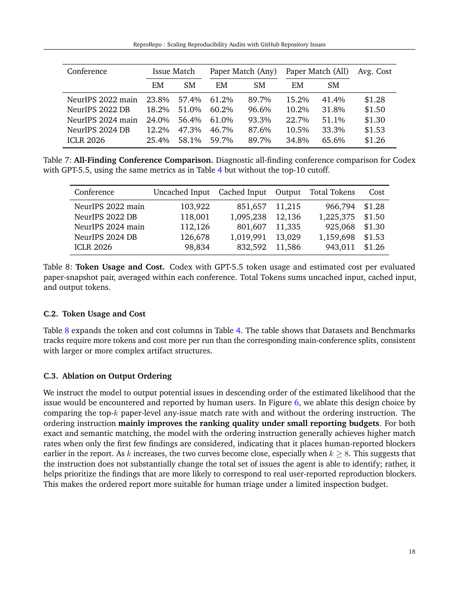
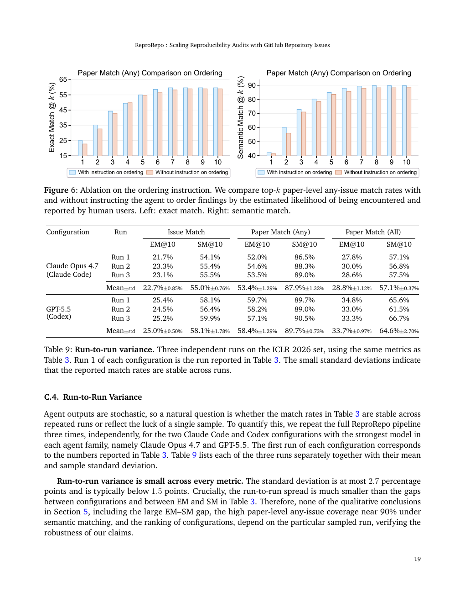
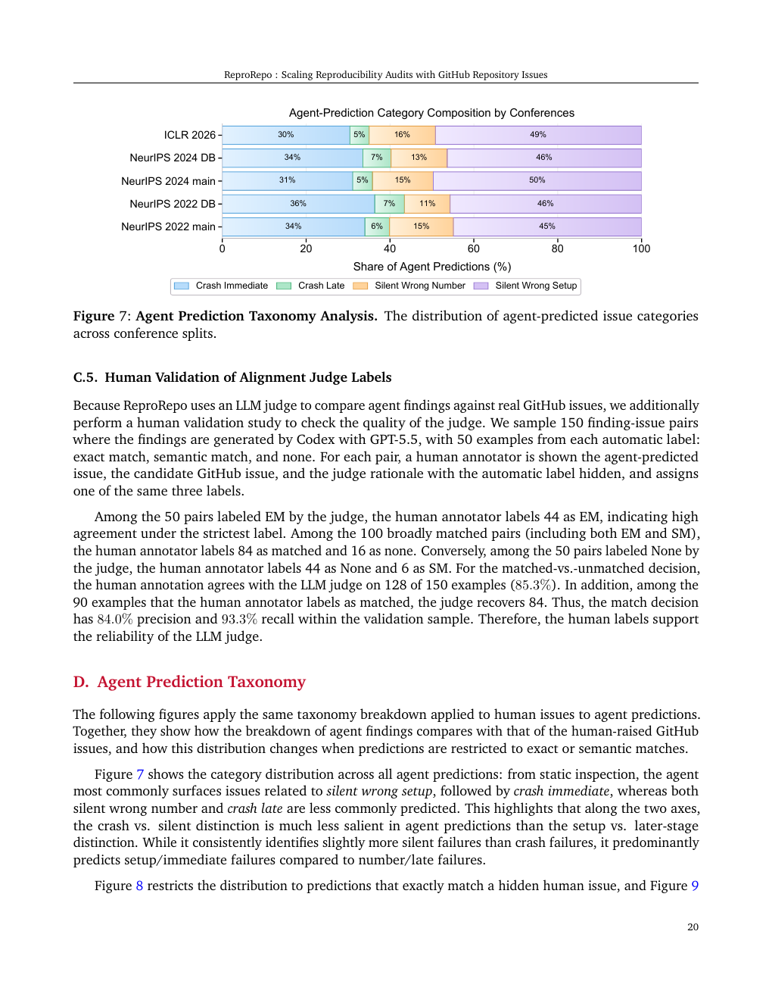
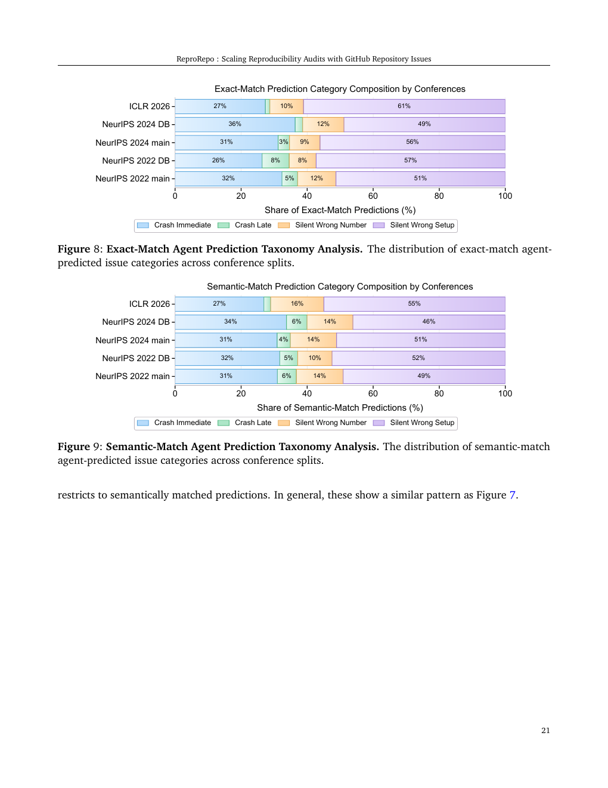
GitHub 官方 API 不提供任意仓库任意历史点的 star 时间序列。本次使用历史日报中 2026-06-13 15:26 CST 的同批仓库快照，与 2026-06-17 13:10 CST 当前值相减，得到约 93.7 小时的可验证净增；这不是严格 72 小时三日值，但优于无法核验的估算。
| # | 项目 | 用途简介 | 当前 Star | 最近可验证净增 | 语言 | 最近更新 UTC |
|---|---|---|---|---|---|---|
| 1 | obra/superpowers | Agentic skills 框架与软件开发方法论，围绕 agent 工作方式组织项目能力。 | 230,075 | +3,813 / 约 93.7h | Shell | 2026-06-17 05:08 |
| 2 | NousResearch/hermes-agent | 强调长期适应与持续个性化的个人 agent。 | 195,533 | +3,340 / 约 93.7h | Python | 2026-06-17 05:02 |
| 3 | multica-ai/andrej-karpathy-skills | 以单一 CLAUDE.md 形式注入 coding agent 行为约束与工程经验。 | 177,061 | +2,675 / 约 93.7h | 未标注 | 2026-06-17 05:07 |
| 4 | affaan-m/ECC | 跨 Claude Code、Codex、OpenCode、Cursor 的 agent harness 优化系统。 | 216,838 | +2,385 / 约 93.7h | JavaScript | 2026-06-17 05:07 |
| 5 | anomalyco/opencode | 开源 coding agent 与可替换 agent harness。 | 175,360 | +1,546 / 约 93.7h | TypeScript | 2026-06-17 05:05 |
排名方法：仅在已有同源历史快照的高相关仓库中计算当前 star 减历史 star，并按净增降序排列。未把不同窗口或缺失历史值的仓库混排。
执行前检查了当前工作区所有 morning-brief*.html，并排除任何此前 GitHub 板块出现过的仓库。筛选范围聚焦 AI Agent、Agent Skill、agent 架构/运行时、coding agent、agent 工具链与 agent 可用基础设施；泛化 awesome 列表、通用开发路线图、纯提示词合集和低相关 AI UI 被排除。
151,775 ★ · Python · 更新于 2026-06-17 05:07 UTC
用途与能力：Anthropic 官方 Agent Skills 公共仓库，用于组织可被 agent 调用的技能包。值得关注：skills 正成为 coding agent 和桌面 agent 能力扩展的轻量接口。
149,773 ★ · Python · 更新于 2026-06-17 04:41 UTC
用途与能力：构建和部署 AI agents 与 workflows 的可视化平台。值得关注：代表从 prompt 原型转向可编排、可部署 agent workflow 的工程化方向。
139,517 ★ · Python · 更新于 2026-06-17 04:59 UTC
用途与能力：面向 agent engineering 的基础框架，覆盖模型、工具、状态、链路和运行组件。值得关注：仍是观察 agent 应用抽象层演进的核心项目。
133,717 ★ · TypeScript · 更新于 2026-06-17 05:17 UTC
用途与能力：提供网页搜索、抓取与交互 API，让 agent 更可靠地读取开放网页。值得关注：web-grounded agent 的瓶颈常在信息获取与页面结构化，Firecrawl 是常见工具层选择。
132,877 ★ · Python · 更新于 2026-06-17 05:02 UTC
用途与能力：终端里的 agentic coding tool，可理解代码库、执行例行任务、解释复杂代码并处理 git 工作流。值得关注：它是 coding agent 产品化、CLI 化和长任务工程化的标杆之一。
2026-06-16 · 官方研究/安全评测文章
OpenAI 介绍 Deployment Simulation：用真实对话数据在发布前模拟部署行为，以预测模型在实际使用中的表现并改进安全评测。该方向与 agent/工具模型上线前评估高度相关。
2026-06-14 · 官方生态/企业部署更新
OpenAI 宣布 Partner Network，并称投入 1.5 亿美元帮助全球合作伙伴推进企业 AI 采用、部署和转型。它不是模型能力发布，但影响企业侧 agent 落地渠道。
| 发布日期 UTC | 标题 | 简介 |
|---|---|---|
| 2026-06-16 17:00 | Why Tejal Patwardhan stopped underestimating the models - Episode 21 | 官方系列访谈视频，主题围绕对模型能力的判断与实践经验。 |
| 2026-06-15 23:20 | Build and test iOS apps without leaving Codex | Codex 开发者演示，展示在 Codex 内构建与测试 iOS app 的工作流。 |
| 2026-06-15 18:02 | How Wayfair Uses GPT-5.5 to Power Catalog Enrichment Across 40M Products | 企业案例视频，介绍 GPT-5.5 在大规模商品目录增强中的应用。 |
| 2026-06-15 13:03 | Codex as a Solutions Engineering Partner | Codex 场景视频，聚焦解决方案工程中的 agentic coding 协作。 |
| 2026-06-14 22:44 | How Payward Ships Faster with Codex | Codex 企业采用案例，主题为用 coding agent 加速软件交付。 |
检查 Anthropic 官方 News 与官方 YouTube RSS 后，未发现 2026-06-13 15:26 CST 之后的新技术博客、研究文章、开发者更新或官方视频。官方 News 最新可见条目仍集中在 2026-06-12，已在此前日报中覆盖。
以下为我此前在工作区生成并发给你的简报。本节提供可点击原文件链接，并内嵌预览，方便你直接回看。
| 日期 | 文件 | 主题 |
|---|---|---|
| 2026-06-08 | morning-brief-test-2026-06-08.html | 测试稿；今日论文 QBugLM；首次 GitHub 三日代理榜；OpenAI/Anthropic 动态。 |
| 2026-06-09 | morning-brief-2026-06-09.html | Autonomous Incident Resolution；新建仓库三日净增；OpenAI 官方视频。 |
| 2026-06-12 | morning-brief-2026-06-12.html | AgentBeats；约三日 Star 增长；新增高 Star 未总结项目。 |
| 2026-06-13 | morning-brief-2026-06-13.html | SpatialClaw；GitHub 可验证近期增长；官方动态；当日包含阶段性总结。 |
| 用途 | 仓库 | 历史 Star | 当前 Star | 可验证净增 / 说明 |
|---|---|---|---|---|
| 增长候选 | obra/superpowers | 226,262（2026-06-13） | 230,075 | +3,813 |
| 增长候选 | NousResearch/hermes-agent | 192,193（2026-06-13） | 195,533 | +3,340 |
| 增长候选 | multica-ai/andrej-karpathy-skills | 174,386（2026-06-13） | 177,061 | +2,675 |
| 增长候选 | affaan-m/ECC | 214,453（2026-06-13） | 216,838 | +2,385 |
| 增长候选 | anomalyco/opencode | 173,814（2026-06-13） | 175,360 | +1,546 |
| 增长候选 | openclaw/openclaw | 378,452（2026-06-13） | 379,077 | +625 |
| 增长候选 | n8n-io/n8n | 192,267（2026-06-13） | 192,863 | +596 |
| 增长候选 | langgenius/dify | 145,027（2026-06-13） | 145,541 | +514 |
| 高 Star 新增 | anthropics/skills | 此前未总结 | 151,775 | 按当前总 Star 排名 |
| 高 Star 新增 | langflow-ai/langflow | 此前未总结 | 149,773 | 按当前总 Star 排名 |
| 高 Star 新增 | langchain-ai/langchain | 此前未总结 | 139,517 | 按当前总 Star 排名 |
| 高 Star 新增 | firecrawl/firecrawl | 此前未总结 | 133,717 | 按当前总 Star 排名 |
| 高 Star 新增 | anthropics/claude-code | 此前未总结 | 132,877 | 按当前总 Star 排名 |
morning-brief-test-2026-06-08.html、morning-brief-2026-06-09.html、morning-brief-2026-06-12.html、morning-brief-2026-06-13.html。LithiumDA/ReproRepo、anthropics/skills、langflow-ai/langflow、langchain-ai/langchain、firecrawl/firecrawl、anthropics/claude-code。